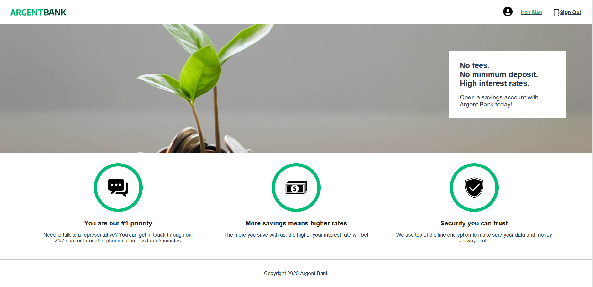

ArgentBank 🇬🇧
Personnal bank account manager

Issue
Use an API for a banking application
Needs
- Authentication: secure access to the service to manage your bank account and user profile.
- Transactions API: backend framework template for this feature.
Skills developed
- [x] Implement a state manager in a React
REDUXapplication - [x] Interact with an
AXIOS API | MONGOdb - [x] Implement an authentication system to a secure API
JWT token - [x] Modeling a
SWAGGER API | NODEjs
Resources Provided
Libraries
REACT
Install
Recommended editor
Requirements
- Git to clone repos
- nodeJS(version 14.20.1) to execute commands
- npm (version 6.14.17) to launch the application (front-end & back-end)
Dependencies
- react-router-dom (version 5.3.0)
- Redux (version 5.3.0)
- react-redux (version 7.2.5)
- redux/toolkit (version 1.6.2)
- redux-thunk (version 2.4.0)
- axios (version 0.23.0)
- prop-types (version 15.7.2)
Step 1: Launching the back-end
- Clone the project repo:
gh repo clone AndyRama/AndyRamaroson_13_25112021 - Go to this folder:
cd BackEnd/server - Install its dependencies:
npm install - Launch back-end on default port:
npm run dev:server - Populate the database (default):
npm run populate-db
Step 2: Launching the front-end
- Go to this folder:
cd FrontEnd/argentbank - Install its dependencies:
npm install - Launch front-end on port 3000:
npm run start
Web Render View URL: http://localhost:3000
ArgentBank API provides data for users 2 users.
SportSee 🇫🇷
PROBLEMATIQUE
Utilisez une API pour une application bancaire
BESOINS
- Authentification : accès sécurisé au service pour gérer son compte bancaire et son profil utilisateur
- API Transactions : modèle de structure backend pour cette fonctionnalité
Compétences développées
- [x] Implémenter un gestionnaire d'état dans une application React
REDUX - [x] Interagir avec une API
AXIOS | MONGOdb - [x] Implémenter un système d'authentification à une API sécurisée
JWT token - [x] Modéliser une API
SWAGGER | NODEjs
Ressources fournies
Bibliothèques
REACT
Installation
Editeur recommandé
Prérequis
- [Git] pour cloner les repos.
- [nodeJS](version 14.20.1) pour exécuter les commandes.
- [npm](version 6.14.17) pour lancer l'application (back-end & front-end).
Dépendances
- react-router-dom (version 5.3.0)
- Redux (version 5.3.0)
- react-redux (version 7.2.5)
- redux/toolkit (version 1.6.2)
- redux-thunk (version 2.4.0)
- axios (version 0.23.0)
- prop-types (version 15.7.2)
Etape 1 : Lancement du back-end
- Cloner le repo du projet :
gh repo clone AndyRama/AndyRamaroson_13_25112021 - Aller dans ce dossier :
cd BackEnd/server - Installer ses dépendances :
npm install - Lancer le backEnd sur le port par défaut :
npm run dev:server - Peupler la base de donnée (par défaut) :
npm run populate-db
Etape 2 : Lancement du front-end
- Aller dans ce dossier :
cd FrontEnd/argentbank - Installer ses dépendances :
npm install - Lancer le frontEnd sur le port 3000 :
npm run start
URL de la vue de rendu Web : http://localhost:3000
API de ArgentBank fournit des données pour les utilisateurs 2 utilisateurs.